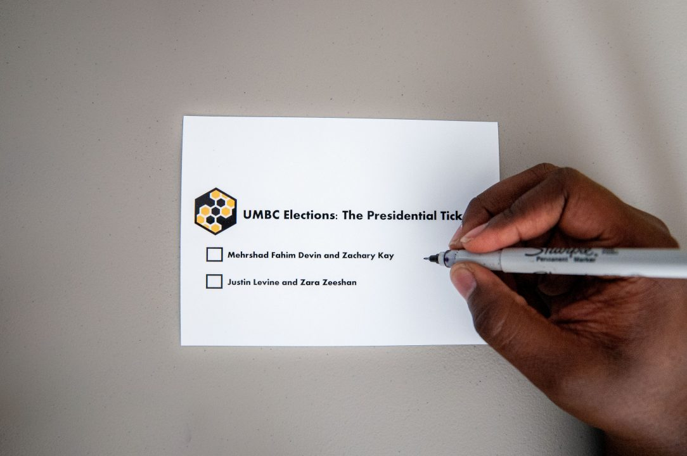
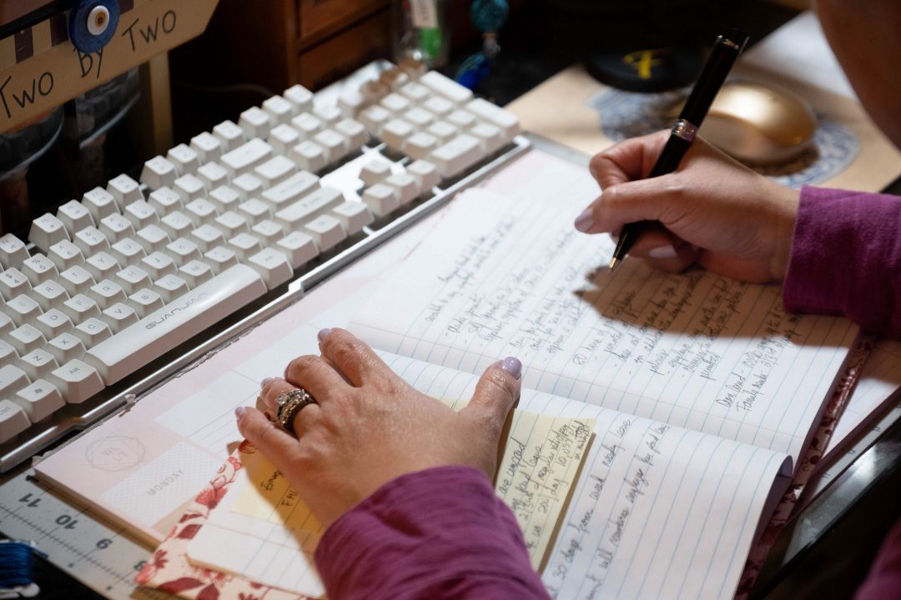

About Me
I'm a business journalist with an educational background in finance. I'm interested in telling all kinds of stories, but those that help hold corporations accountable or empower consumers are preferred.
As a student pursuing my Master's at the Philip Merrill College of Journalism I have spent my last semester studying public affairs reporting, media law, design and photography. I have internship experience at business publications covering mergers and acquisitions and legislation and investigating corporate malfeasance.
Portfolio
Welcome to Queer Bible Study: Navigating sexuality and faith

The definition of student engagement: SGA presidential candidates weigh in

'The more mundane, the better': Mass observation during the coronavirus
Experience
Reporting Intern at The Capitol Forum | June 2020-present
- Investigate anti-trust violations and corporate malfeasance, spanning topics from Chegg and academic integrity to Carvana and its promised 150 pt. inspection
- Interview government entities, such as the FTC and the GAO, resulting in a deeper understanding of anti-trust law and government processes
- File and process FOIA requests
Business of Law Reporting Intern at The Daily Record | Summer 2019
- Covered the business of law beat, writing daily and weekly articles
- Managed relationships with PR Managers from Baltimore-area law firms and law schools
Freelance Work
- Greenbelt News Review weekly freelance reporter | Sept. 2020-present
- "The Holiday Food Wish List: A Wrap-Up of Roland Park Traditions" | Roland Park News Magazine 2019
- "The Value of Rhetorical Analysis Outside Academia" | Writing about Writing, Fourth Edition
- "Dexmedetomidine stops nerve agent-induced status epilepticus" | H.S. McCarren, J. Arbutus, C. Ardinger, E. Dunn, C. Jackson, J.H. McDonough | Epilepsy Research
Skills
- Data analysis. Experienced in financial data analysis using Excel, Matlab and Stata.
- Journalism. Internships at daily business publications. Editor-in-chief of college newspaper for two years. Committed to local journalism and watchdog business journalism.
- Public speaking. Led semiweekly team meeting presentations as editor-in-chief of my college newspaper. Frequently represented college student organizations in stakeholder meetings.
- Teaching. Experienced in training college newsroom staff in AP style and journalism topics. Mentored two high school students for their AP Capstone projects in journalism.
- Photography. Experienced in operating a DSLR camera and editing photos in Adobe Lightroom.
Program Proficiencies
- HTML/CSS
- Adobe Lightroom
- Adobe XD
- Adobe InDesign/InCopy
- Microsoft Office
- WordPress
- Stata
- MATLAB
Education
B.S. in Financial Economics and B.A. in English Literature | Graduated May 2020